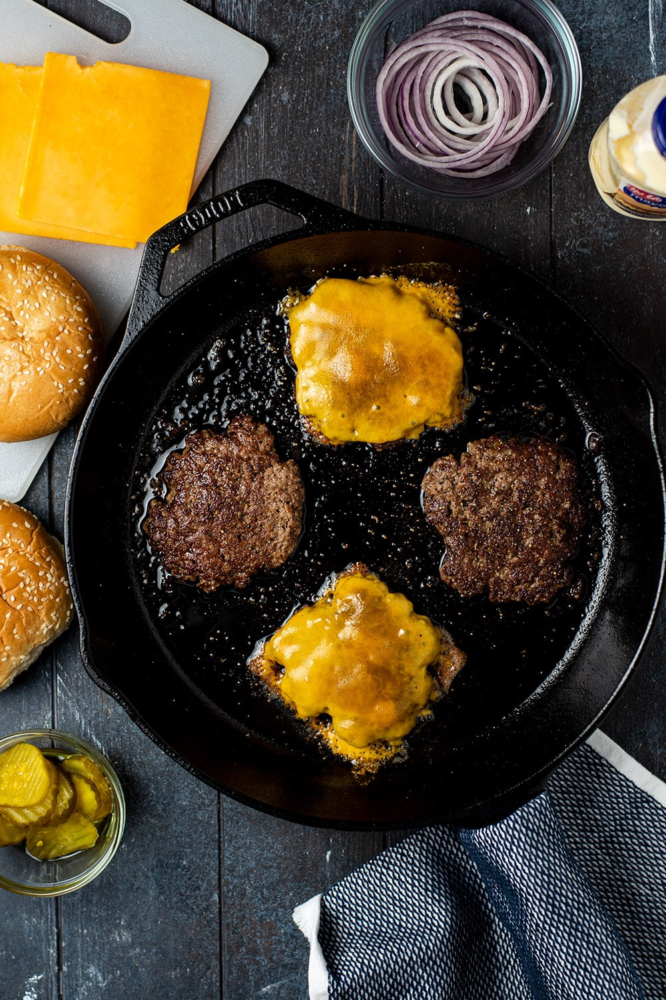

Smash Burgers

Simple but full of flavour
Ground chuck is a great all-purpose, buy-it-anywhere choice for burgers.
But if you want to get ambitious and blend, say, chuck with ground short rib or brisket,
we say go for it.
Ingredients
- Vegetable oil (for pan)
- 1 pound ground beef chuck (20% fat)
- Kosher salt
- 4 slices American cheese
- 4 potato rolls, toasted
- Ketchup, mayonnaise, shredded iceberg lettuce, and dill pickle slices (for serving)
Steps
- Heat a cast-iron griddle or large heavy skillet over medium-high until very hot,
about 2 minutes, then lightly brush with vegetable oil. Divide ground beef into 4 equal portions
(do not form patties).
- Working in batches if needed, place portions on griddle and smash flat with a spatula to form
4"-diameter patties (craggy edges are your friend). Season liberally with salt and cook, undisturbed,
until outer edges are brown, about 2 minutes. Flip patties, season with salt, and place a slice of
cheese on top of each patty. Cook until cheese droops and burgers are medium-rare, about 1 minute.
- Serve patties on rolls with ketchup, mayonnaise, lettuce, and pickles.